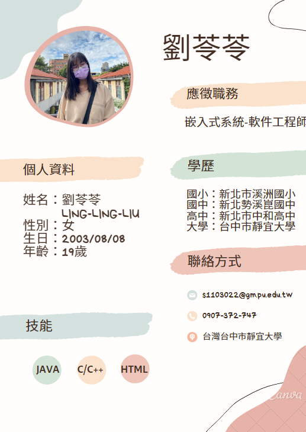

| 
|
劉苓苓自傳履歷
為何適合這份工作：
本身就讀資訊管理系，對資訊有一定的認識，也會去申請資工的雙主修，讓自己對硬體的東西更加理解，
有專門去思考linux、unix等等，對系統的部分去更加了解，
把優缺點思考之後，看能不能去做更新我的想法，在系統之中有效地去做利用。
|
求學經歷：
在高二時接觸到了電腦相關，從基礎的ARDUINO和機器人操控開始玩起，就發現我對硬體和軟體方面都特別有興趣，確定了自己大學的科系是想要往哪些方面。
升上大學我並沒有讀到資工或是電機方面，而是就讀資管
，讓自己也有思考到要怎麼樣人才能去做更方面的使用，並在下一學期會修更多有關軟體和邏輯方面的課，讓自己的專業知識去做提升。
|
未來規劃：
我有一個很明確的目標有兩個。
第一個是增加我的外語能力，在大一時已經有考過多益，但我知道要是跟別人溝通的能力，我還不太足夠，在聽說寫得方面還要再做加強，我會多聽劇、廣播甚至是音樂等等，一一去做理解，除了聽過也要懂他們再說甚麼，和去模仿他們說話等等，讓自己熟悉外語。
第二個則是程式能力，軟體日新月異的在改變，需要知道當代程式做甚麼更改，讓自己有追上當代的腳步，還有要注意程式怎麼樣才會變得更有效力，省時省空間，我有練習LeetCode、CPE的練習，考取程式證照證明我的能力
|
|